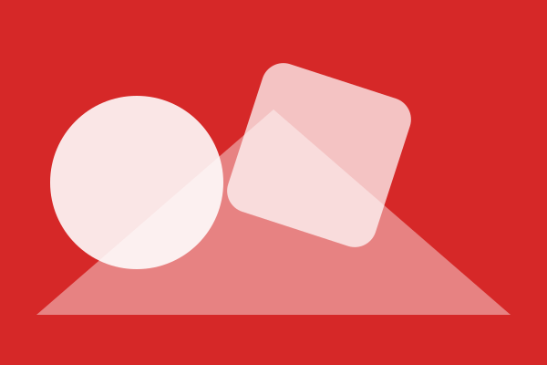
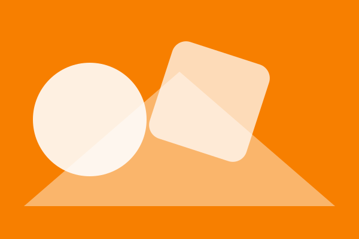
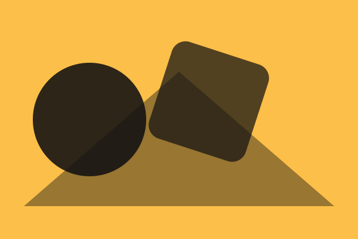
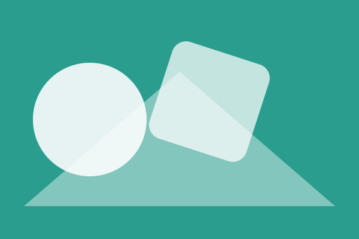
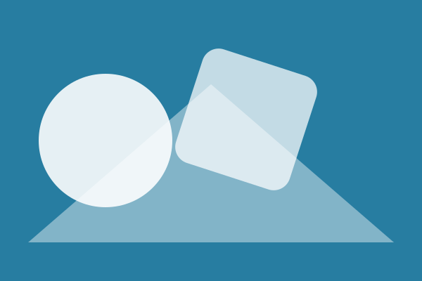
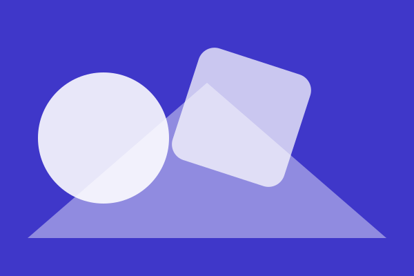
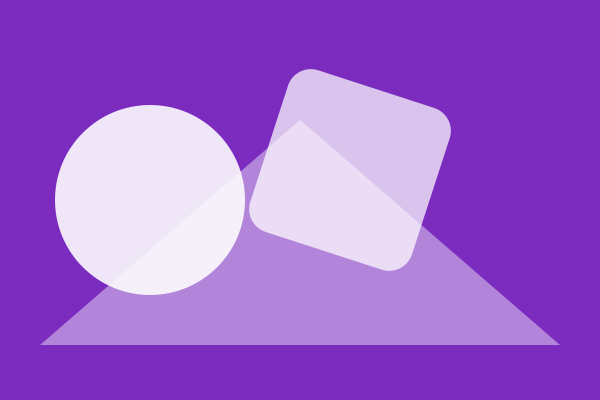
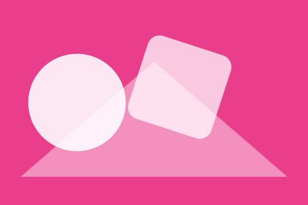
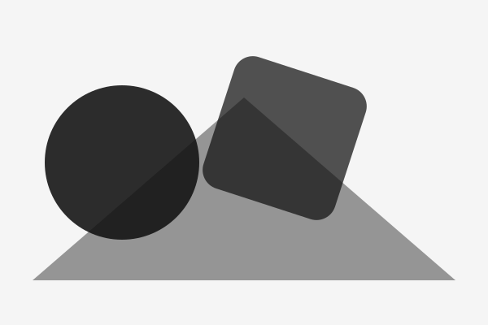

Este sitio explora nueve colores mediante composiciones geométricas sencillas. Cada imagen utiliza un color diferente como elemento visual principal, lo que facilita observar y comparar la galería en un teléfono, una tableta o una pantalla grande.
El diseño utiliza CSS Grid y sigue un enfoque mobile-first. A medida que aumenta el tamaño de la pantalla, la galería cambia de una columna a dos columnas y algunas figuras ocupan ambas columnas. La página también responde a las preferencias de movimiento reducido y modo oscuro.








